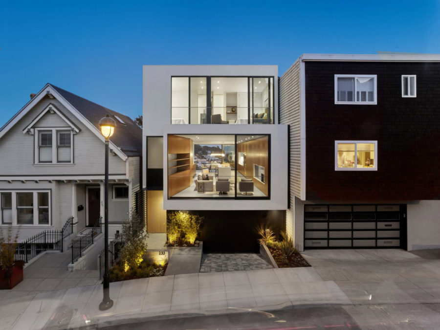

Mid-century modern (MCM) is an American design movement in interior,
product, graphic design, architecture, and urban development that was
popular from roughly 1945 to 1969,[1][2] during the United States's post–World War II period.
